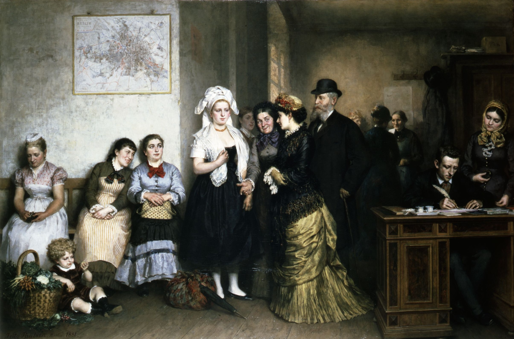
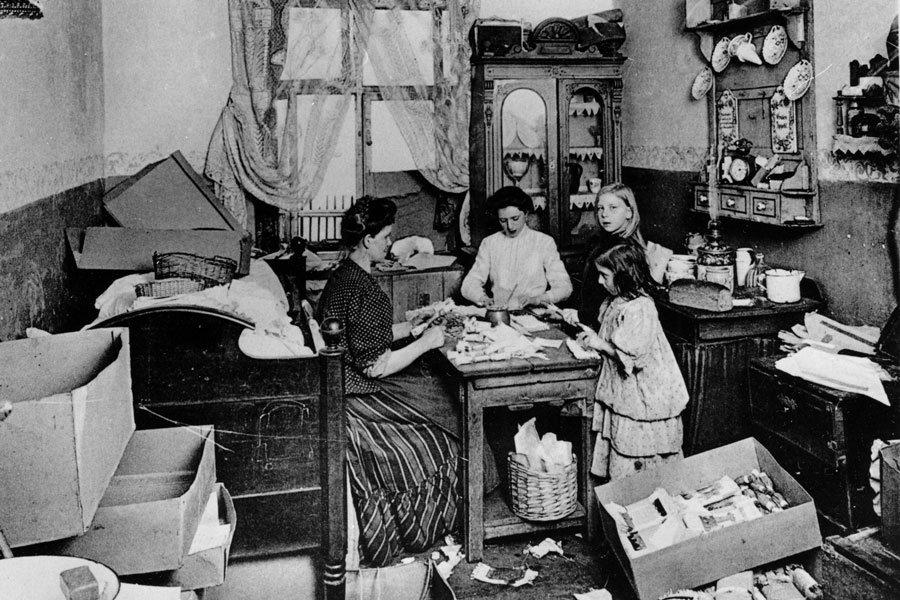
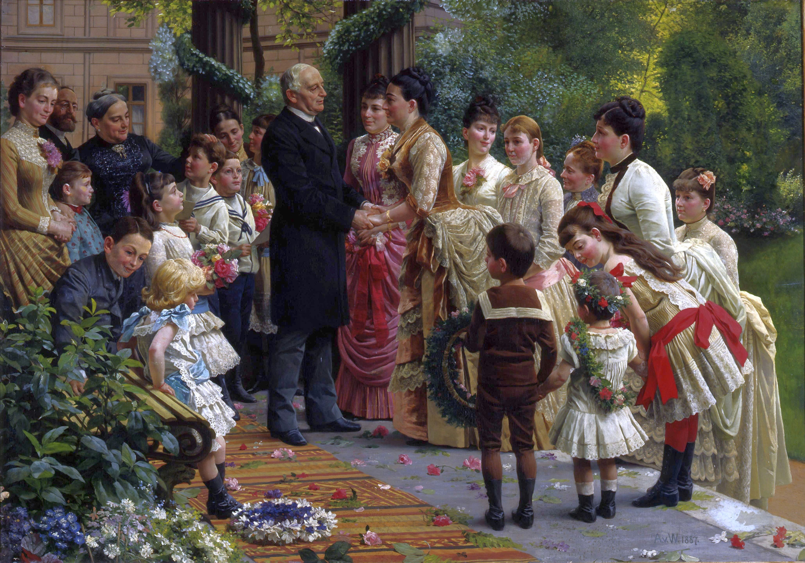
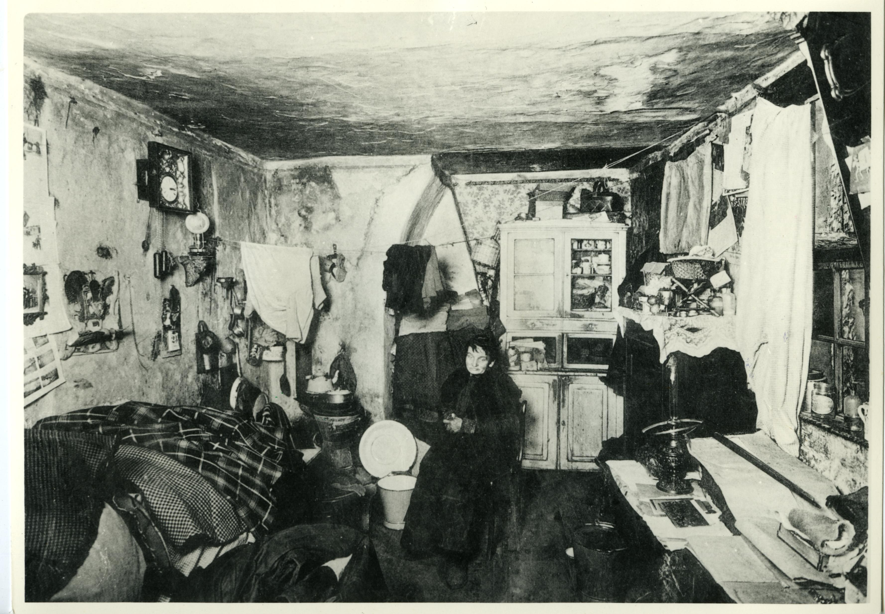
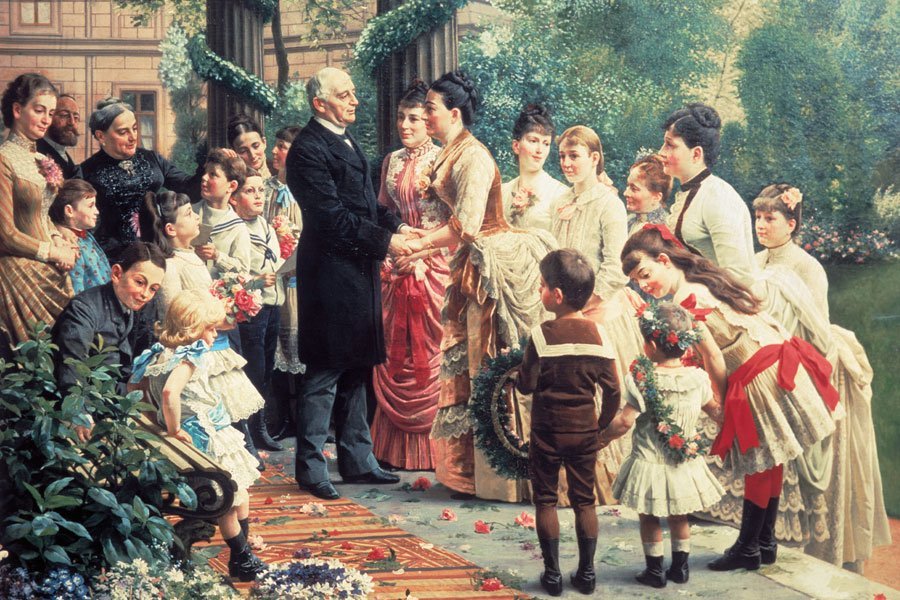
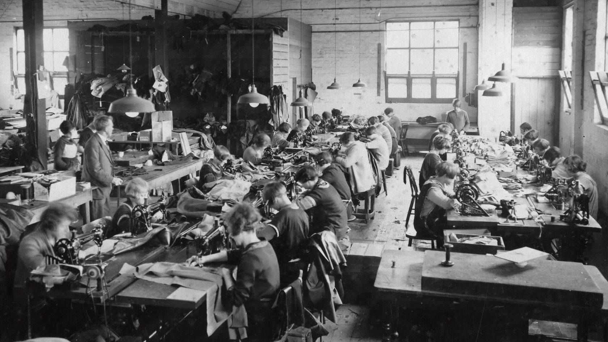

9. Gesellschaft des Deutschen Kaiserreichs, «AgF», S. 103-151 (30')
Textverständnis «Aus guter Familie»
Mit dem Lösen der folgenden Aufgaben überprüfen Sie Ihr Verständnis der gelesenen Seiten im Roman. Weiter unten finden Sie eine historische Einführung zur bürgerlichen Gesellschaft des deutschen Kaiserreiches.
Wer weint an Eugenies Hochzeitsfest?
«- sie hätte ihn gern in den Arm genommen und mit ihm geweint, ihn gestreichelt und getröstet.» (AgF, S. 110)
Benennen Sie Martins politische Gesinnung: Vetter Martin ist…
Die Heidlings und die Woszenskis
Ordnen Sie die Begriffe der Familie zu, zu der sie besser passen.
Ziehe den Begriff in den entsprechenden Bereich.
Familie Heidling
Familie Woszenski
Das Deutsche Reich: Die Wilhelminische Zeit




«Aus guter Familie» erschien 1895 in Deutschland. In dieser Zeit, zwischen 1871 und 1918, war Deutschland ein Kaiserreich, das geprägt war von preussischem Militarismus, Imperialismus und einer schnellen Industrialisierung. Damit wollte sich das Deutsche Reich international möglichst viel Prestige verschaffen und gegenüber anderen Grossmächten aufschliessen. Für die grosse Mehrheit der Menschen in Deutschland bedeutete dieser Wandel: Arbeit unter sehr harten Bedingungen in Fabriken, in Kohlebergwerken oder als Bedienstete in den Häusern reicherer Leute. Deutschland schwankte zwischen den Extremen einer überaus dynamischen Modernisierung und dem strikten Beharren auf längst unzeitgemässen Traditionen. In den letzten 30 Jahren der deutschen Kaiserzeit, bis zum Ende des Ersten Weltkrieges 1918, regierte Kaiser Wilhelm II. Deshalb wird diese Phase auch Wilhelminische Zeit genannt.
In den folgenden Aufgaben lernen Sie die Gesellschaft des Deutschen Reiches kennen. Dadurch sollten Sie die Figuren des Romans «Aus guter Familie» besser einbetten können sowie die Bedingungen verstehen, unter denen Gabriele Reuter geschrieben hat.
«musstewissen» - Das deutsche Kaiserreich
Schauen Sie sich das Erklärvideo von «musstewissen» an, das die Gesellschaft des Deutschen Kaiserreiches beschreibt. Beantworten Sie anschliessend die Fragen dazu.
Musstewissen Geschichte: Gesellschaft im Deutschen Kaiserreich, Link, 2018.
Die deutsche Gesellschaft war geprägt durch…
Grosse gesellschaftliche Unterschiede
Der industrielle Kapitalismus brachte im 19. Jahrhundert eine Klassengesellschaft hervor, die von Erwerbsklassen mit grossen wirtschaftlichen und gesellschaftlichen Gegensätzen geprägt war – insbesondere zwischen besitzendem Bürgertum auf der einen und lohnabhängigem Proletariat auf der anderen Seite. Im folgenden Abschnitt lernen Sie die Klassen der Wilhelminischen Gesellschaft kennen.

Elendsquartier in der Berliner Spreestrasse, um 1910
© Deutsches Historisches Museum, Berlin
Von Wohnelend im Kaiserreich…
In engen, feuchten und kalten Quartieren ohne Fenster lebten viele Arbeiter:innen in den Städten - in Kombination mit meist sehr harten Arbeitsbedingungen in Fabriken.

Der 70. Geburtstag des Kommerzienrates Valentin Manheimer, 1887
Anton von Werner, © Deutsches Historisches Museum, Berlin
…zu elegantem Grossbürgertum
Dieses Gemälde liess ein Textilfabrikant anfertigen. Im Garten seiner Berliner Villa nimmt er die Glückwünsche der Töchter und Enkelkinder entgegen. Als Damenkonfektionär hat er es zu Ansehen und Reichtum gebracht.
Oberschicht und Unterschicht
Ordnen Sie die Berufsbezeichnungen der entsprechenden Schicht zu.
Ziehe den Begriff in den entsprechenden Bereich.
Oberschicht
Unterschicht
In der mittelalterlichen europäischen Ständegesellschaft war der Adel neben den Geistlichen und dem Dritten Stand (d.h. alle anderen, v.a. in der Landwirtschaft arbeitenden Bauern) ein Stand. Im Deutschen Reich machte der Adel, auch Aristokratie genannt, nur rund ein Promille der Bevölkerung aus. Dennoch war er in Politik und Militär bis zum Ersten Weltkrieg absolut führend. Zum konservativ-adeligen Wertehimmel zählten etwa Ehre, Prinzipientreue, Tugendhaftigkeit und Arbeit für das Gemeinwohl.
Im Kaiserreich hatte weiterhin die Geburt einen wesentlichen Einfluss auf die Stellung des Menschen in der Gesellschaft. Nur langsam gewann die individuelle Qualifikation an Bedeutung. Einigen gelang aber durch Leistung und Arbeit der Aufstieg in den sozialen Hierarchien dieser Klassengesellschaft. Mit dem Ausbau von Industrie und Finanzwesen bildete sich eine grossbürgerliche Schicht, die dem Adel zentrale Positionen in Staat und Gesellschaft streitig machte. Durch ihre Finanzkraft stand sie in Pracht und Luxus Formen der aristokratischen Repräsentation oft in nichts nach.
Das Bürgertum umfasst die städtische Mittel- und Oberschicht. Beispiele für Bürger sind Bildungsbürger (Beamte, Gymnasiallehrer, Richter, Ingenieure, Ärzte etc.) sowie Wirtschaftsbürger (zu Wohlstand gekommene Unternehmer und Kaufleute). Das 19. Jahrhundert wird auch als «bürgerliches Zeitalter» bezeichnet, obwohl die Schicht um 1900 nur 6-15% der Bevökerung ausmacht (je nach dem, welche Gruppen dazugezählt werden). Die bürgerliche Kultur und ihre Traditionen prägten aber die gesamte Gesellschaft: Leistungsorientierung, Fleiss und Pflichterfüllung zählten ebenso dazu wie Wertschätzung der klassischen Bildung, Erziehung und Wissenschaft; öffentliches Engagement und Wohltätigkeit vor Ort traten hinzu. Von der Anrede und den Begrüssungsformen über die Tischmanieren und die Kleidungsvorschriften bis hin zu Reinlichkeit: Etliche Spielregeln und Praktiken mussten verinnerlicht sein, um dazuzugehören. Liebe aber ebenso Kalkül prägten das Familienideal. Die familiäre, von Öffentlichkeit und Beruf abgeschirmte Lebenswelt galt als Rückzugsort, an dem die Mütter den Wertekatalog mit Hilfe des Hauspersonals an die Kinder weitergaben.

Die Arbeiterschaft oder das Proletariat sind Bezeichnungen für die gewerblich-industriellen Lohnarbeiter:innen, v.a. in den Städten. Dazu gehören z.B. auch Hausangestellte bürgerlicher Familien. Deren Zahl stieg während des 19. Jahrhunderts rasant an. Um 1900 machten diese im Kaiserreich knapp einen Drittel aller Bewohner:innen aus. Selbst wenn immer wieder Sozialgesetze erlassen wurden, um diese Bevölkerungsschicht zu unterstützen, lebten viele von ihnen im Elend. Gegen Ende des 19. Jh. kam die höhere Produktivkraft der Wirtschaft langsam auch Teilen des Proletariats zugute.
Trotz der schnellen Industrialisierung und Urbanisierung arbeiteten weiterhin Millionen von Deutschen in der Landwirtschaft. Deren Anteil sank Ende des 19. Jh. von 50% auf noch rund einen Drittel zu Beginn des 20. Jh. Die Lebenswelten der ländlichen Gesellschaft variierten stark; es gab selbstständige Bauern, aber auch Knechte, Mägde, Tagelöhner, Wanderarbeiterinnen etc. Sie werden häufig zum Proletariat gezählt.
Bei der Stellenvermittlung
Betrachten Sie zuerst das folgende Gemälde. Können Sie verschiedene gesellschaftlichen Schichten identifizieren? Klicken Sie anschliessend auf die pulsierenden Zahlen, um mehr Informationen zu erhalten.

Amme aus ländlichem Gebiet
Amme ist die Bezeichnung für eine Pflegemutter. Spreewälder Ammen waren der ihnen nachgesagten robusten Gesundheit wegen sehr begehrt, die Tracht galt beinahe als ein Markenzeichen. Eine Amme war im Berlin des Kaiserreichs eine ausgesprochene Prestigesache.
Die Frau im Bild stammt aus der ländlichen Gesellschaft und wird aber durch das Anheuern als Amme in einem bürgerlichen Haushalt zu einem Teil des städtischen Proletariats.
Stellenvermittlung
Für vom Land zugewanderte Personen verfügte Berlin 1880 über 450 Vermietungsbüros. Hier wurden diese Menschen als Köchin, Zimmermädchen oder Kutscher (also Teil des Proletariats) vermittelt. Die Büros waren Drehscheibe für Zehntausende junger Menschen aus dem ländlichen Osten Deutschlands, die auf Arbeitssuche häufig schon von den Mitarbeitenden der Büros am Bahnhof abgefangen wurden.
Der Schreiber am Tisch ist wahrscheinlich ein Bildungsbürger, also Teil der städtischen Mittelschicht.
Bürgerliche Frau
Die Spreewälderin (1) wird einer jungen Bürgersfrau (2) als Amme empfohlen. Deren wesentlich älterer Mann (rechts neben ihr) mustert den Neuzugang. Die Bürgersfrau ist also Teil des Bürgertums. Da sich die Familie eine Amme leisten kann, gehört sie vermutlich dem Grossbürgertum an.
«Gesinde-Vermiethungsbureau». Gemälde von Fritz Paulsen, Berlin, 1881, ©Deutsches Historisches Museum, Berlin
Die Gesellschaft in "Aus guter Familie"
Die verschiedenen Figuren aus dem Roman «Aus guter Familie» haben unterschiedliche gesellschaftlichen Stellungen. Können Sie die Personen einer gesellschaftlichen Gruppe zuordnen?
Ziehe den Begriff in den entsprechenden Bereich.
(Gross-)Bürgertum
Proletariat
Reflexion
Halten Sie Ihre Überlegungen im Lesejournal fest.